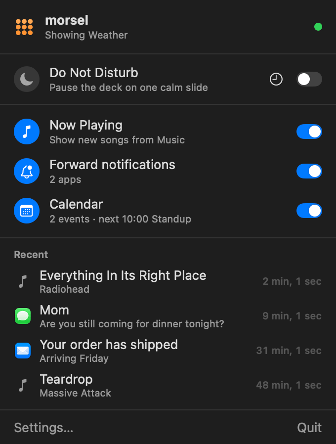
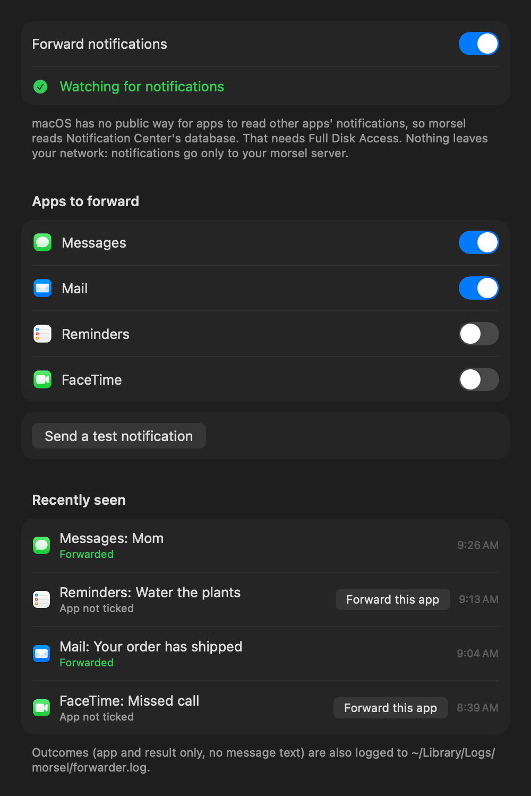
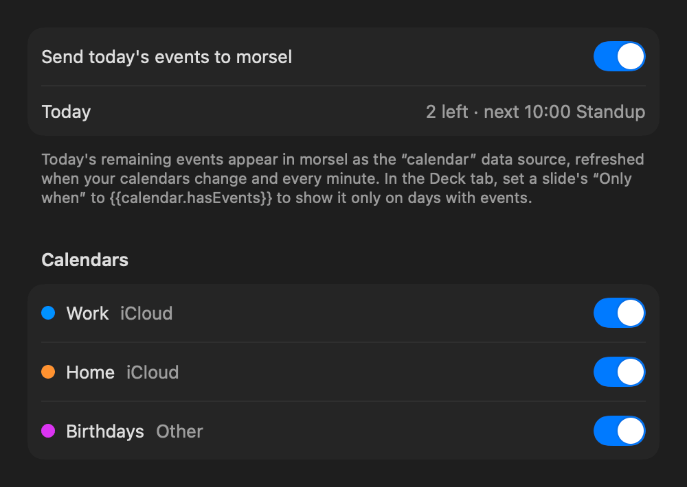

Your Mac, on your Tidbyt.
A small menu bar app that puts what you're listening to, the notifications you care about and your next meeting on the display, and quiets it down when you need to focus.

A new song, a message from someone you've chosen, and an alert sent from anywhere with /api/notify. Each one interrupts the deck for a few seconds, then the deck carries on where it left off.
Four things, each a switch in the menu.
Turn on only what you want. Everything goes straight to your own morsel server; nothing leaves your network.
Now Playing
When a new track starts in the Music app, its artwork, title and artist appear on the display for a few seconds.
The first time, macOS asks whether morsel may control Music. That's how it reads the artwork. To send whatever's playing right now, use Send the current track in Settings.
Do Not Disturb
Pauses the display on one calm slide and holds back notifications and Now Playing until it's over.
Turn it on from the menu until you turn it off, for 30 minutes, an hour or two, or until the meeting you're in ends.
Notifications
Choose which apps' notifications appear on the display. Each one shows with the app's icon, its title and the message.
- Apps to forward lists every app that has posted a notification. Turn on the ones you want.
- Recently seen shows what arrived and what happened to it. One click forwards an app you missed.
- Send a test notification checks the whole path to the display.
macOS doesn't let apps read other apps' notifications directly, so morsel reads Notification Center's database. That needs Full Disk Access, and the app walks you through granting it.

Calendar
Sends today's remaining events to morsel as the calendar data source. It updates whenever your calendars change, and every minute.
Choose which calendars count. The starter deck's Calendar slide uses it straight away, showing your next meeting and how long until it starts, and plays only on days with events ({{calendar.hasEvents}}).

Five minutes, once.
The app needs macOS 14 or later and a morsel server it can reach.
-
Build and install it. There's no signed download yet, so for now it's built from source, which needs Xcode and XcodeGen. The script installs it to
~/Applicationsand opens it.brew install xcodegen mac/install.sh -
Connect it to your server. Open Settings… → General and enter the server's address. The default,
http://localhost:8000, is right when morsel runs on the same Mac. Status turns green once the Tidbyt is connected. While you're there, turn on Open at login. - Turn on what you want from the menu: Now Playing, notifications, Calendar.
- Allow what macOS asks for. Each feature asks only when you first use it: Music for Now Playing, Calendars (full access) for Calendar, and Full Disk Access for notifications. For Full Disk Access, the app opens the right page in System Settings with a small window to drag morsel into the list. It closes by itself once access is on.
- Choose apps to forward. In Settings… → Notifications, turn on the apps you want on the display, then send a test notification.
MORSEL_TEAM=<your team ID> in the repo's .env and they'll stick.
What to expect.
The menu's status dot
Design what appears
Now Playing, notifications and messages are slides too. Change how they look in the editor's System tab, with all the same elements. See the guide.
Privacy
Notifications go only to your morsel server, on your network. The app keeps a short log of what it forwarded, with the app's name and the outcome but never the message.
macOS updates
Notification Center's database isn't a public API, so a macOS update can change it. If forwarding stops working, the Notifications settings say so instead of failing silently. Now Playing, Calendar and Do Not Disturb don't depend on it.